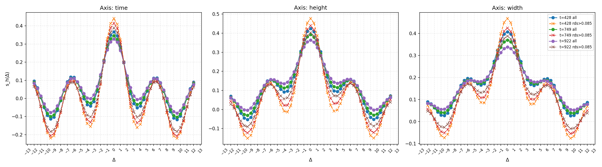
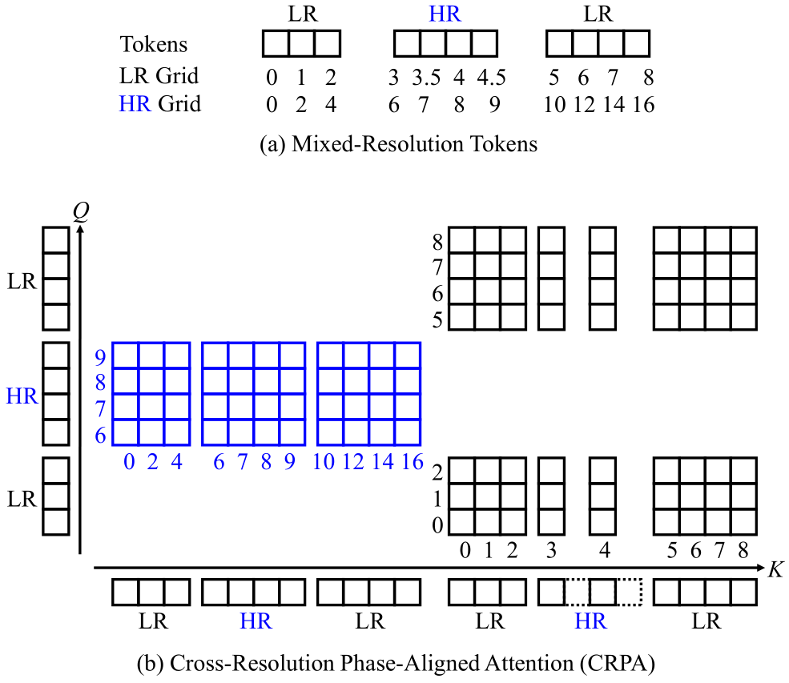
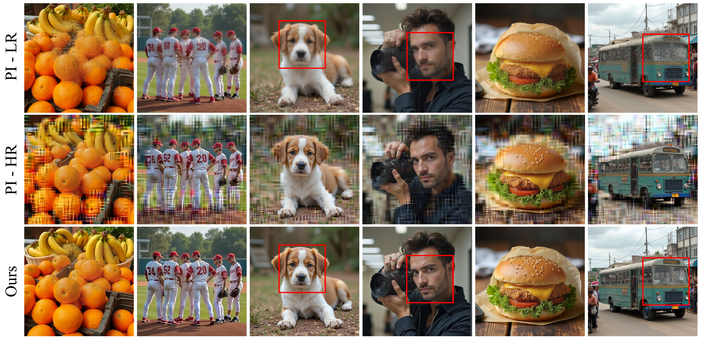

One Attention, One Scale:
Phase-Aligned Rotary Positional Embeddings for
Mixed-Resolution Diffusion Transformer
In submission
Haoyu Wu1, Jingyi Xu1, Qiaomu Miao1, Dimitris Samaras1, Hieu Le2
1Stony Brook University 2UNC-Charlotte
Abstract
We identify a core failure mode that occurs when using the usual linear interpolation on rotary positional embeddings (RoPE) for mixed-resolution denoising with Diffusion Transformers.
When tokens from different spatial grids are mixed, the attention mechanism collapses. The issue is structural. Linear coordinate remapping forces a single attention head to compare RoPE phases sampled at incompatible rates, creating phase aliasing that destabilizes the score landscape. Pretrained DiTs are especially brittle—many heads exhibit extremely sharp, periodic phase selectivity—so even tiny cross-rate inconsistencies reliably cause blur, artifacts, or full collapse.
To this end, our main contribution is Cross-Resolution Phase-Aligned Attention (CRPA), a training-free drop-in fix that eliminates this failure at its source.
CRPA modifies only the RoPE index map for each attention call: all Q/K positions are expressed on the query's stride so that equal physical distances always induce identical phase increments. This restores the precise phase patterns that DiTs rely on. CRPA is fully compatible with pretrained DiTs, stabilizes all heads and layers uniformly.
We demonstrate that CRPA enables high-fidelity and efficient mixed-resolution generation, outperforming previous state-of-the-art methods on image and video generation.
Why RoPE Interpolation Fails in Mixed-Resolution Denoising

Attention Scores vs. RoPE relative distance Δ. Mean normalized scores κ(Δ) on Wan model across diffusion steps t ∈ {428, 749, 922}. For each axis (time, height, width), curves are averaged over all attention heads and over RoPE-dominant heads, where RoPE dominance is defined by a head-level RoPE-dominance score (rds); heads with rds > 0.085 are classified as RoPE-dominant. The relative distance Δ denotes token offsets along the corresponding axis. We observe (i) strong periodicity with a sharp global maximum near Δ ≈ 0, (ii) amplification in RoPE-dominant heads, and (iii) stability across timesteps, suggesting a pretrained phase prior.
Method

Cross-Resolution Phase-Aligned Attention (CRPA). For each attention call, RoPE indices of keys are rescaled onto the query grid so that equal physical distances yield identical phase increments, eliminating cross-rate aliasing and enabling stable mixed-resolution denoising with arbitrary LR/HR layouts.
Results
Text-to-video generation with Wan2.1-1.3B.

Mixed-resolution image generation with FLUX.1-dev.
Acknowledgements
- We are grateful to Meher Gitika Karumuri, Brandon Smith, Amogh Gupta, and Vidya Narayanan for their insightful comments and valuable discussions. This work was supported in part by NSF grants IIS-2123920 and IIS-2212046.
- The website template was borrowed from Mip-NeRF 360 and VolSDF.